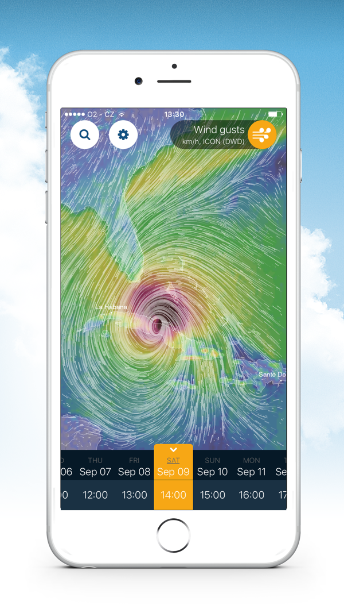
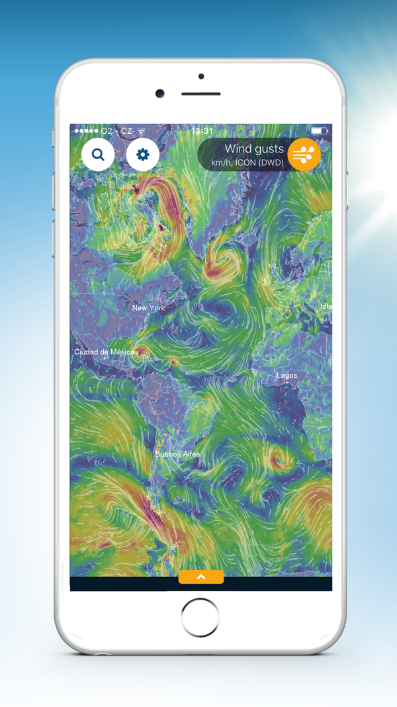
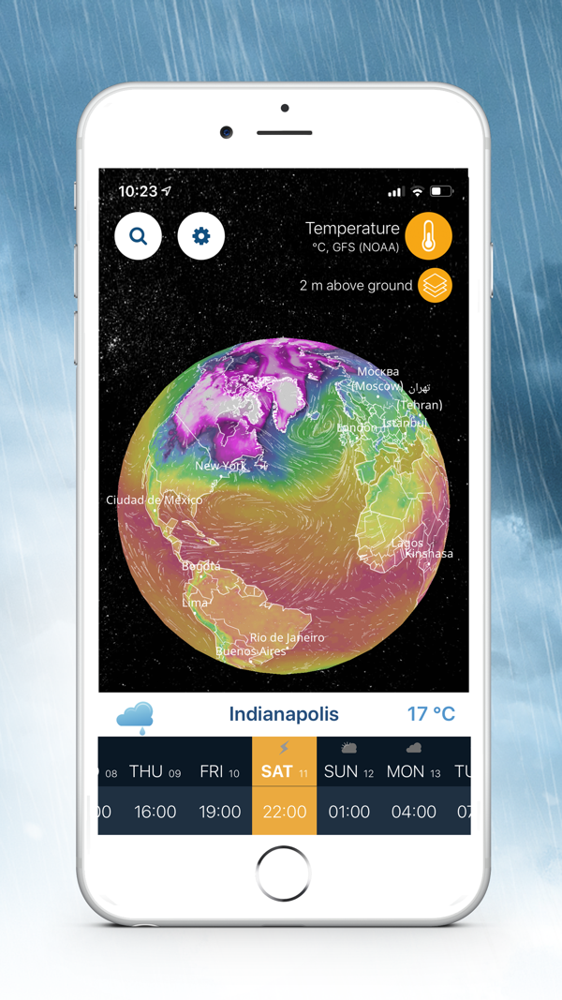

Ventusky 用了三个月，踩过的五个坑一次说清
从高度层温度读数误解、台风模型路径乱信，到分享截图被警告——这篇把 Ventusky 最容易翻车的几个地方逐条拆解，附防坑清单。
Ventusky官网直接打开就是一张铺着风场流线的好看地图，上手三分钟就能拖动地球、切图层、拉时间轴。我当初也是这么以为的——直到把它当成"随手看看"的玩意儿用了一个月，才发现这玩意儿的信息密度比我想象的高太多，几个地方没弄明白，差点把错误的天气判断带进了出行计划里。
坑一：高度层切了，温度读数不是一回事
第一次把高度从"近地面"切到 850 hPa，看到温度显示 12 度，心想完了今天怎么这么冷。再切回近地面一看，23 度。我当时以为应用出 bug 了，后来翻了 Ventusky文档 才搞明白——不同高度层的温度不是同一个基准面上的数值。默认近地面给的是 2 米高度气温，而 850 hPa 是约 1500 米上空的气压面温度，两者差个十来度太正常了。
症状就是：切了高度，温度骤变，以为数据错了。原因是 Ventusky 的高度弹窗对温度和风两类图层开放，但每个气压面的温度本来就不一样，它是在给你看不同高度的大气状态，不是报错。解法很简单：看近地面气温就老老实实用默认层，要对比逆温或山脊风的时候才切高层——这时候你本来就是想看高空的，别拿它当地面温度读。

坑二：台风来了，别拿模型路径当官方预报
去年台风季，我看到 Ventusky 的台风追踪器上 ECWMF 模型路径直指我家方向，焦虑了两天，结果官方预报锥画的是另一个方向。最后台风确实没过来。
这个坑的关键是没分清两种模式。Auto 模式用的是各海区官方预报机构的数据（美国国家飓风中心、日本气象厅这些），标颜色、有预报锥。而模型模式叠的是 ECMWF、GFS、ICON、GEM 这些全球模型的路径——模型路径不标注强度，也不是预报。官方自己也写了：全球模型不擅长精确预测气旋强度，它只给走向参考。所以模型路径分叉不是"预报不准"，是模型在给你看不同的可能性。
我后来的做法是：先看 Auto 模式的预报锥（这是官方判断），再切模型模式看各家模型的路径是不是跟锥一致。一致就踏实，分叉就知道得每天刷新等调整。

坑三：以为所有图层都能切高度
有段时间我在做一个关于山区降水的小调查，切了 700 hPa 高度层，然后打开降水图层等数据变化——等了半天什么都没变。我以为是地图卡住了，刷新重启都没用。
后来才知道：降水、雷达、闪电这些要素根本没有高度维度。Ventusky 的高度切换只对温度和风两类图层生效，这是硬设计，不是 bug。我之前完全没注意到官方帮助里写的这一句。这类要素要么是地面观测（雷达、闪电），要么是整层积分（降水），切高度对它们没意义。所以下次你发现切了高度某图层纹丝不动，先别骂应用，先想想这个图层在不在高度开关的支持范围内。
坑四：分享截图被找上门
这事真发生了。我之前把一张 Ventusky 的台风路径截图贴到了自己的个人博客上，没注明来源——纯图配文，觉得"好看就分享一下"。过了大概一周，博客后台收到一条留言，来自 InMeteo 的版权团队，措辞还算客气但明确要求补上来源标注或者撤下。赶紧补了一行"图片来源：Ventusky"加上官网链接，这事就算过去了。
官方 FAQ 写得很清楚：所有分享方式都走应用里的 Share 区，静态图片可以用，但必须附上来源标注。更狠的是，不许 iframe 嵌入——如果你搞个小网站把 Ventusky 网页版嵌进去当自己的天气页面，官方明确禁止。有集成需求要邮件沟通。至于抹掉来源那更不用说了，这是转载的前提条件，没商量。
坑五：时间轴拖到"过去"不是看历史数据存档
我有次想查一场已经过去的暴雨，把时间轴往前拉了十几个小时，结果数据还是"现在"的，只是时间轴刻度变了。我当时以为应用坏了——过去的天气数据怎么不显示？
后来发现 Ventusky 的时间轴分两端：往前能拉的范围取决于各模型的预报时次覆盖，而历史存档数据只在网页端可查，手机版功能稍有缩水但胜在随身，从下载就能拿到安装包。想拿过去的原始数据集做研究，得去各个模型机构自己的公开数据入口找。说白了，Ventusky 是个可视化工具，不是气象档案馆——拉时间轴是看预报动画，查实况历史要去别的地方。

防坑清单
说了这么多，其实归结下来就是五条铁律：
- 看地面温度就用默认近地面层，切高度是看高空状态的，别拿气压面温度当气温读。
- 台风先看 Auto 模式的官方预报锥，模型路径只是走向参考，分叉就等刷新，别焦虑。
- 切高度没反应的图层别硬等——降水、雷达、闪电本来就不支持高度切换。
- 分享必带来源标注，别 iframe 嵌网页，也别抹水印。
- 时间轴拉不到远古历史，存档去各模型机构找，Ventusky 只管可视化。
知道这些之后，Ventusky 其实相当省心——它把复杂的数值预报铺得清清楚楚，四个维度随便组合对比，唯一的门槛就是别把它当普通天气 App 来用。我整理的这套 Ventusky 资料顺手做了三备份：国际线 GitHub，国内看 Gitee 或 GitCode，哪个顺就用哪个。